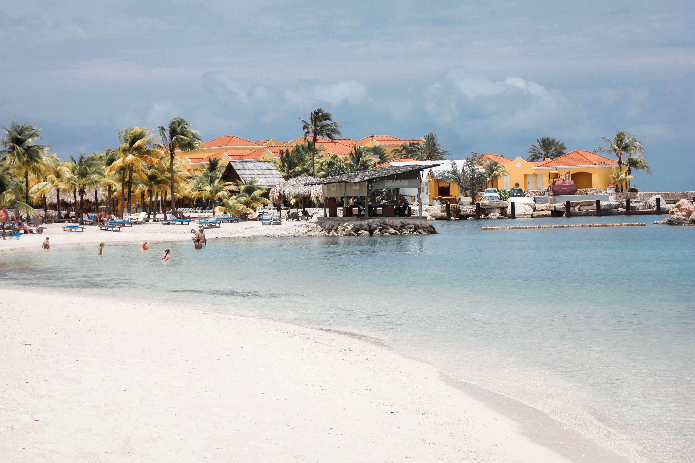
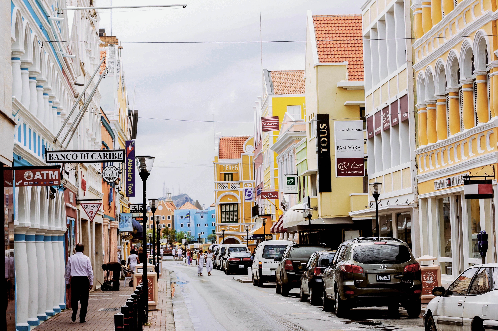
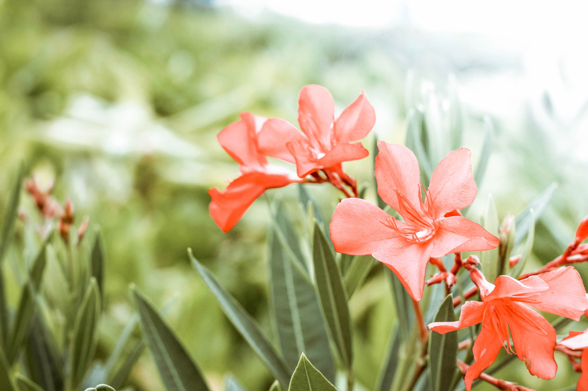

Curacao is een eiland in de zuidelijke Caraibische Zee, voor de kust van Venezuela. Curacao een land binnen het Koninkrijk der Nederlanden. Curacao is al jarenlang een favoriete vakantiebestemming van Nederlanders. Dit heeft te maken met de Caribische sfeer, maar ook met de band van Nederland. Het tropische klimaat, de prachtige stranden en natuur en de vriendelijkheid van de mensen zorgen voor de rest.
  